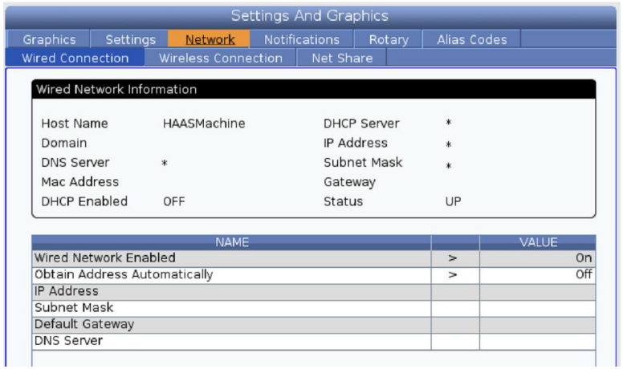
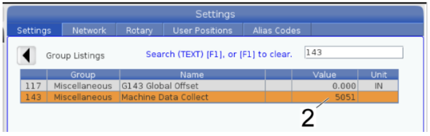
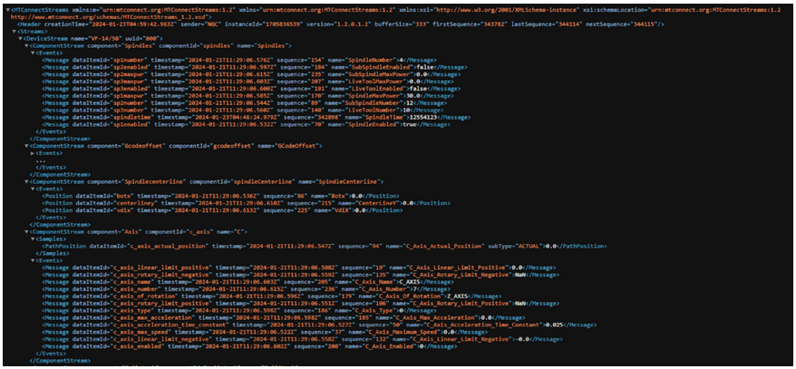
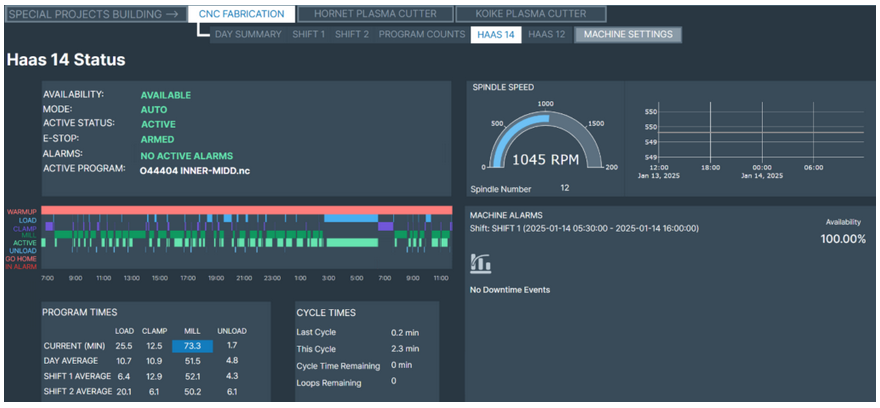
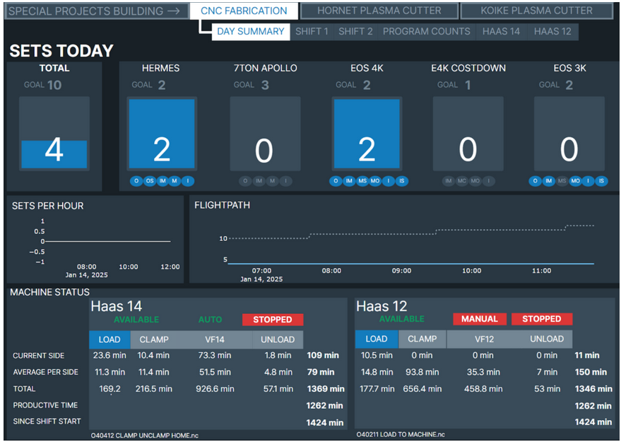

Need to configure MTConnect on a Haas NGC controller? You're in the right place.
MTConnect is a standard vocabulary that allows users to capture and share manufacturing data in real time. On Haas machines with the Next Generation Control (NGC), MTConnect lets you access status information, equipment metadata, and historical data using a simple HTTP-based Request/Response model outputting XML. By following the steps in this guide, you can set up MTConnect and verify its functionality on your Haas NGC machine.
Note: Most Haas Controllers (NGC) created after 2017 support this MTConnect option.
1. Check Machine Requirements
Software Version
Confirm that your Haas NGC controller is running software version 100.20.000.1200 or newer. This ensures the best compatibility with MTConnect.
Machine Naming
If your machine's name contains a slash '/', you may need an additional patch for MTConnect to work correctly. Contact your local Haas Factory Outlet if this applies.
2. Understand MTConnect Requests
MTConnect on Haas NGC uses an HTTP-based approach where a client (e.g., monitoring software) sends a Request, and the Haas machine's MTConnect Agent (server role) returns a Response.
There are three primary MTConnect requests:
Probe Request
- Retrieves machine metadata, including descriptions of data points.
http://172.21.16.31:8082/probe
Current Request
- Fetches the latest (real-time) values of each data point.
http://172.21.16.31:8082/current
Sample Request
- Requests historical data from a specified range of sequence numbers.
http://172.21.16.31:8082/sample
3. Configure MTConnect on Haas NGC
Connect the Machine to Your Network
From the Haas controller, navigate to Settings > Network > Wired Connection.

If your machine already has an IP Address, Subnet Mask, and Gateway IP, record this information, and make sure Wired Network Enabled has a value of 'On'.
Confirm Setting 143 'Machine Data Collect' port is set to 5051 and press F4 to save.
The network status should be "UP" (active). If it shows "DOWN," confirm that cables or wireless connections are properly set up.
If this information is blank, complete the following steps on the "WIRED CONNECTION" screen:
- Enter a suitable IP, Subnet, and Gateway
- Make sure 'Wired Network Enable' is 'ON', and 'Obtain Address Automatically' is 'OFF'
- Save changes by pressing F4
- Record the IP Address, Gateway, and Subnet of your machine — save these values by photo or written notes
- Set Setting 143 'Machine Data Collect' port to '5051' by navigating to the "Settings" header, then press F4 to save

Confirm the MTConnect Port Is Allowed by Your Network
Haas NGC will use TCP port 5051 internally (Adapter) for MTConnect after you have set it.
Ensure no firewall or other service is blocking traffic on TCP port 8082 (Agent).
You can connect to the local subnet and test this port from the command prompt on your PC.
4. Construct MTConnect Request URLs
MTConnect requests generally follow this format:
http://<machine_ip>:8082/<request_type>- machine_ip: The IP address of your Haas machine (e.g., 172.21.16.31).
- machine MTConnect Agent: port 8082
- request_type: One of probe, current, or sample.
Note: Most monitoring platforms primarily use the "Current" request type for real-time data retrieval.
5. Test and Verify MTConnect
Use a Web Browser or HTTP Client
- Type the MTConnect request URL into a web browser (Chrome, Edge, Firefox, etc.)
- A successful response will display XML data describing the machine status or metadata.
- Full address would be
172.21.16.31:8082/currentfor this example.

6. Troubleshooting Tips
Check Compatibility
- Confirm your software version meets the MTConnect requirement.
Firewall Port
- Verify port 8082 is open and allowed by your network's firewall.
Network Status
- Make sure the status is "UP" on the Haas controller.
- Confirm you have set the Machine Data Collect option correctly.
- Confirm you can ping the machine from your local subnet.
7. Build Dashboards From the Data
Once MTConnect is properly configured and responding on your Haas NGC controller, the data can feed a production monitoring system or SCADA for real-time analysis.
Parse XML Data
- A monitoring platform reads and interprets the MTConnectStreams XML.
- It extracts key performance indicators (KPIs) such as cycle time, machine state, and feed override.
Build Real-Time Dashboards
- Create widgets or charts to visualize data points (e.g., spindle load or part counts).
- Customize layouts to highlight relevant metrics and display them on large monitors or individual workstations.
Historical Analysis
- While the "Current" data stream drives real-time views, you can archive data for trend analysis.
- Compare past machine states, identify downtime patterns, and plan predictive maintenance.
Alerts & Notifications
- An alert system can send messages when certain thresholds (like spindle load) exceed safe limits.
- Receive notifications via email, text, or on-screen pop-ups, ensuring immediate attention to critical events.
Optimize Operations
- By correlating real-time metrics with other manufacturing data, you can optimize tool usage, improve scheduling, and reduce idle times.
- Data-driven insights help refine processes and support continuous improvement initiatives.
Dashboard examples from live Haas machines outputting MTConnect:


Conclusion
Setting up MTConnect on your Haas NGC controller (e.g., VF-1450) opens the door to real-time monitoring and historical data review. If you encounter any challenges, reach out to your local Haas Factory Outlet or IT support.
By pairing this functionality with a production monitoring system or SCADA, you can transform raw data into meaningful dashboards, alerts, and analytics—empowering you to make informed decisions and elevate productivity on the shop floor.